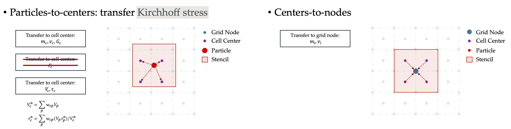
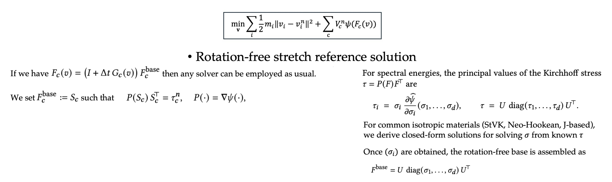

In this paper, we introduce MPM Lite, a new hybrid Lagrangian/Eulerian method that eliminates the need for particle-based quadrature at solve time. Standard MPM practices suffer from a performance bottleneck where expensive implicit solves are proportional to particle-per-cell (PPC) counts due to the the choices of particle-based quadrature and wide-stencil kernels. In contrast, MPM Lite treats particles primarily as carriers of kinematic state and material history. By conceptualizing the background Cartesian grid as a voxel hexahedral mesh, we resample particle states onto fixed-location quadrature points using efficient, compact linear kernels. This architectural shift allows force assembly and the entire time-integration process to proceed without accessing particles, making the solver complexity no longer relate to particles. At the core of our method is a novel stress transfer and stretch reconstruction strategy. To avoid non-physical averaging of deformation gradients, we resample the extensive Kirchhoff stress and derive a rotation-free deformation reference solution, which naturally supports an optimization-based incremental potential formulation. Consequently, MPM Lite can be implemented as modular resampling units coupled with an FEM-style integration module, enabling the direct use of off-the-shelf nonlinear solvers, preconditioners, and unambiguous boundary conditions. We demonstrate through extensive experiments that MPM Lite preserves the robustness and versatility of traditional MPM across diverse materials while delivering significant speedups in implicit settings and improving explicit settings at the same time.
Classic MPM suffers from several structural burdens that significantly hinder its performance:
The procedure for a single time-step simulation in MPM Lite can be described as consisting of three stages: Unload, Integrate, and Load.
The first step scatters the particles' physical quantities to the cell centers so that these centers can serve as quadrature points in the subsequent integration stage. To this end, in addition to the usual transfer of mass, momentum, and velocity gradients, the extensive Kirchhoff stress is also transferred from particles to the cell centers. The subsequent kinematic transfer between grid nodes and cell centers then follows the standard APIC-based schemes. Both transfers employ a multilinear kernel, whose weights remain constant during the center-to-grid pass.
For explicit integration, computing internal forces is straightforward, so here we focus on the implicit case, say an optimization-based time integration formulation for backward Euler. A natural temptation will be implicit stress as we already carry cell-center stress. However, this will lead to non-symmetric hessian and is unsuitable for implicit solvers. So, we introduce a new incremental potential optimization formulation based on a custom rotation-free stretch reference.
Concretely, we reconstruct the only the principle stretches of the deformation gradient (i.e. F=S), dropping the rotation part from polar decomposition, as isotropic elastic energy and its tangent depend on F only through its stretch. For common isotropic materials, we derive closed-form solutions for solving principal stretches from given stress. Once the stretch reference or the deformation gradient is obtained, MPM Lite proceeds to solve the problem with standard implicit solvers.
Transferring data back from grid nodes to cell centers, and subsequently from centers to particles, is straightforward and follows the standard APIC-based transfer schemes.
We theoretically prove that under reasonable Lipschitz smoothness assumptions on local velocity fields, the discrepancy in velocity and velocity gradient between MPM Lite and classic B-sline APIC scheme are minimal: they are both O(Δ𝑥^2) with respect to the grid spacing Δ𝑥. Please see our paper for details.
While the primary advantage of Lite lies in its formulation for implicit integration, we include explicit comparison here just for completeness. In the Jelly Falling example, MPM Lite achieves a 1.69× speedup over classic explicit MPM and compare favorably with CK-MPM. We then proceed to demonstrate the core advantage of MPM Lite: its independence from particles during implicit solves. In MPM simulations, a high number of PPC is well known to be essential for suppressing numerical fracture and ensuring stable material behavior, and practical simulations often require PPC values exceeding 20. However, in traditional implicit MPM, the computational cost increases significantly as PPC grows. In contrast, MPM Lite remains insensitive to PPC and achieves up to a 15.9× speedup at 24 PPC.